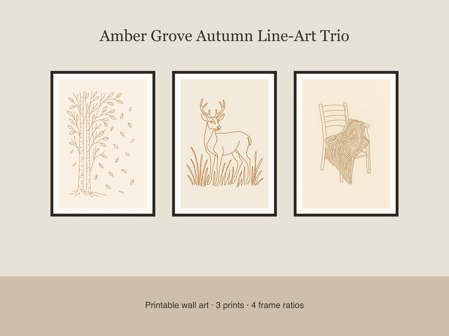

$6.49
View on EtsyBring quiet, golden-hour autumn into your gallery wall with this minimalist line-art trio, printed in warm amber ink on a soft cream background. What's Included: • 3 unique single continuous line-art designs: birch tree grove with falling leaves, a deer in tall autumn grass, and a woven wool blanket draped over a porch chair • Each design in 4 frame ratios: 2x3, 3x4, 4x5, and 11x14 • 12 total high-resolution JPEG files at 300 DPI, ready for crisp printing How To Use: 1. Download your files instantly after purchase (no physical item will be shipped) 2. Choose the ratio that matches your frame size 3. Print at home, at a local print shop, or through an online printing service (such as Walmart, Costco, or Shutterfly) 4. Frame and enjoy your new gallery wall File Format & Size: • JPEG files, 300 DPI • Sized for 2x3, 3x4, 4x5, and 11x14 ratios (crop as needed for other standard sizes) License: This purchase is for personal and small-business commercial use (up to 500 physical units sold). Reselling, sharing, or redistributing the digital files themselves is not permitted. No commercial license certificate is issued but usage rights are included in your purchase. A Note on How These Were Made: These designs were created by our shop with the help of AI tools as part of our design process. We describe the art style honestly — a single continuous line-art illustration in amber ink on a cream background with subtle grain texture for a fine-art printable feel. Thank you for supporting a small shop! If you have any questions about sizing or printing, message us anytime — we're happy to help you get the perfect fit for your space.